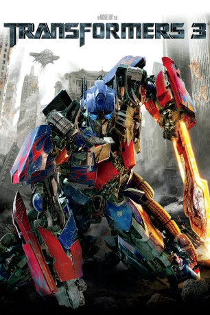

Alternativ: Transformers: Dark of the Moon (Englischer Titel)
Auszeichnungen: für 3 Oscars nominiert
 
 IMDB-Wertung: 6.3 / 10
IMDB-Wertung: 6.3 / 10  Metascore:
Metascore: 
Am 20. Juli 1969 landet Apollo 11 auf dem Mond. Auf der dunklen Seite des Mondes stoßen die Astronauten auf das Wrack eines Raumschiffs. 40 Jahre lang hält die Regierung die Entdeckung geheim. Dann überschlagen sich die Ereignisse: Ein bislang unentdeckter Transformer wird an Bord des Raumschiffs reaktiviert. Es ist der verschollen geglaubte Herrscher von Cybertron, Shockwave. Seine Rückkehr entfacht den erbitterten Krieg zwischen den Autobots und den Decepticons aufs Neue. Jetzt geht es nicht mehr nur um die Zukunft und das Überleben der Erde, sondern des ganzen Universums… damit hatten weder Sam Witwicky noch die Autobots gerechnet!
Jahr: 2011
Dauer: 154 Minuten
FSK: 12
Land: USA Studio: Paramount PicturesTonspuren: DD5.1 - ,
Untertitel:
Auflösung: 1080p (1920x800) Größe: 8099 MB
Genre: Action, Sci-Fi, Abenteuer
Regisseur:  Michael Bay
Michael Bay
Drehbuch: Ehren Kruger
Soundtrack: Steve Jablonsky
Darsteller:
 Shia LaBeouf als Sam Witwicky
Shia LaBeouf als Sam Witwicky Josh Duhamel als Lennox
Josh Duhamel als Lennox John Turturro als Simmons
John Turturro als Simmons Tyrese Gibson als Epps
Tyrese Gibson als Epps Patrick Dempsey als Dylan
Patrick Dempsey als Dylan Frances McDormand als Mearing
Frances McDormand als Mearing John Malkovich als Bruce Brazos
John Malkovich als Bruce Brazos Kevin Dunn als Ron Witwicky
Kevin Dunn als Ron Witwicky Julie White als Judy Witwicky
Julie White als Judy Witwicky Alan Tudyk als Dutch
Alan Tudyk als Dutch Ken Jeong als Jerry Wang
Ken Jeong als Jerry Wang Glenn Morshower als General Morshower
Glenn Morshower als General Morshower Lester Speight als Eddie
Lester Speight als Eddie Buzz Aldrin als Buzz Aldrin
Buzz Aldrin als Buzz Aldrin Ravil Isyanov als Voshkod
Ravil Isyanov als Voshkod Kenny Sheard als Epps Team 'Marc L'
Kenny Sheard als Epps Team 'Marc L' LaMonica Garrett als Morshower's Aide
LaMonica Garrett als Morshower's Aide Brett Stimely als President Kennedy
Brett Stimely als President Kennedy John H. Tobin als President Nixon
John H. Tobin als President Nixon Larry Clarke als NASA Scientist (1969)
Larry Clarke als NASA Scientist (1969) Tom Virtue als Black Ops NASA Technician (1969)
Tom Virtue als Black Ops NASA Technician (1969) Thomas Crawford als Black Ops NASA Technician (1969)
Thomas Crawford als Black Ops NASA Technician (1969) Kevin Sizemore als Black Ops NASA Technician (1969)
Kevin Sizemore als Black Ops NASA Technician (1969) Alan Pietruszewski als NASA Mission Controller (1969)
Alan Pietruszewski als NASA Mission Controller (1969) Peter Murnik als Tracking Station Supervisor (1969)
Peter Murnik als Tracking Station Supervisor (1969) Lindsey Ginter als Old NASA Scientist
Lindsey Ginter als Old NASA Scientist David St. James als Old NASA Scientist
David St. James als Old NASA Scientist Elya Baskin als Cosmonaut Dimitri
Elya Baskin als Cosmonaut Dimitri Zoran Radanovich als Russian Bouncer
Zoran Radanovich als Russian Bouncer Kathleen Gati als Russian Female Bartender
Kathleen Gati als Russian Female Bartender Annie O'Donnell als Human Resources Lady
Annie O'Donnell als Human Resources Lady Mindy Sterling als Female Insurance Agent
Mindy Sterling als Female Insurance Agent Andrew Daly als Mailroom Worker
Andrew Daly als Mailroom WorkerDatei: X:\6-Hexalogie(A-Z)\Transformers\Transformers 3 - Die dunkle Seite des Mondes (2011, FSK12, 1920x800) 3D.mkv seit 29.01.2019
Festplatte: HD Collection-3(N-Z)-6(A-Z)
 Es gibt insgesamt 12 Filme in der Gruppe '6-Hexalogie(A-Z)\Transformers'
Es gibt insgesamt 12 Filme in der Gruppe '6-Hexalogie(A-Z)\Transformers'